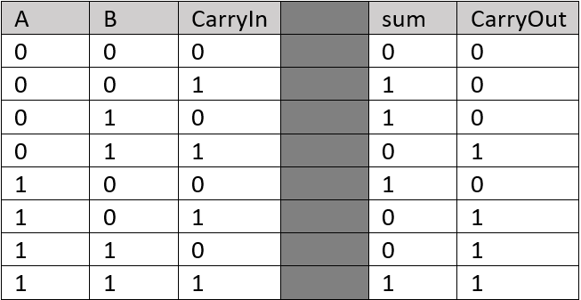
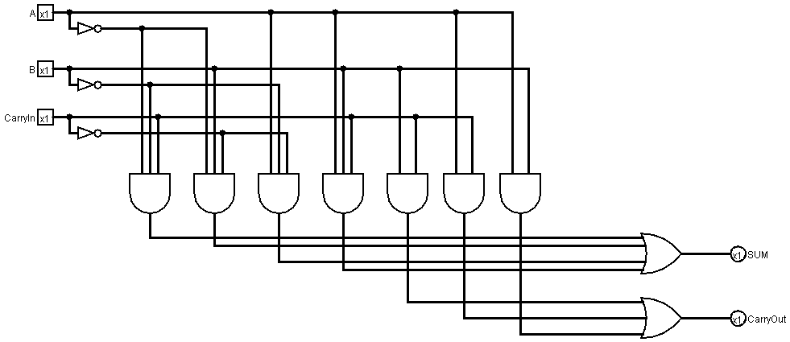
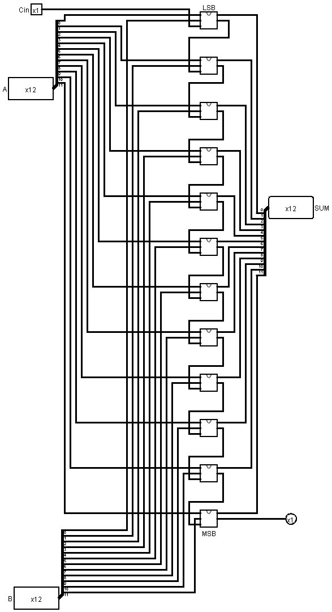
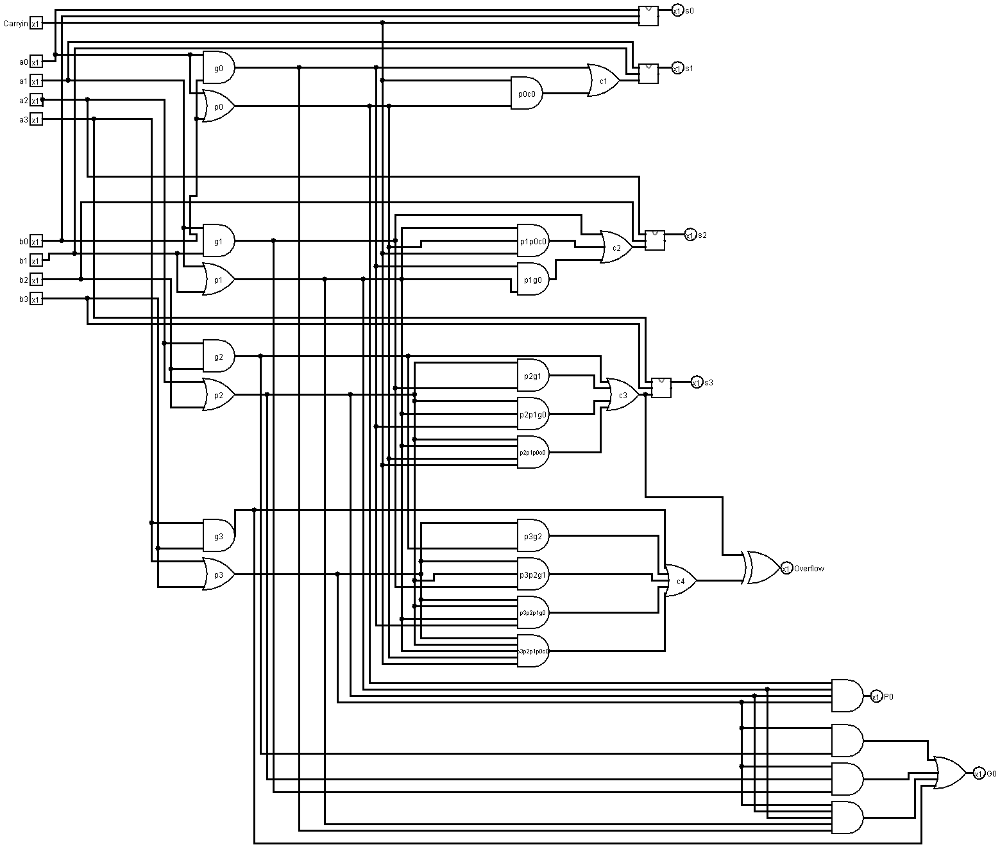
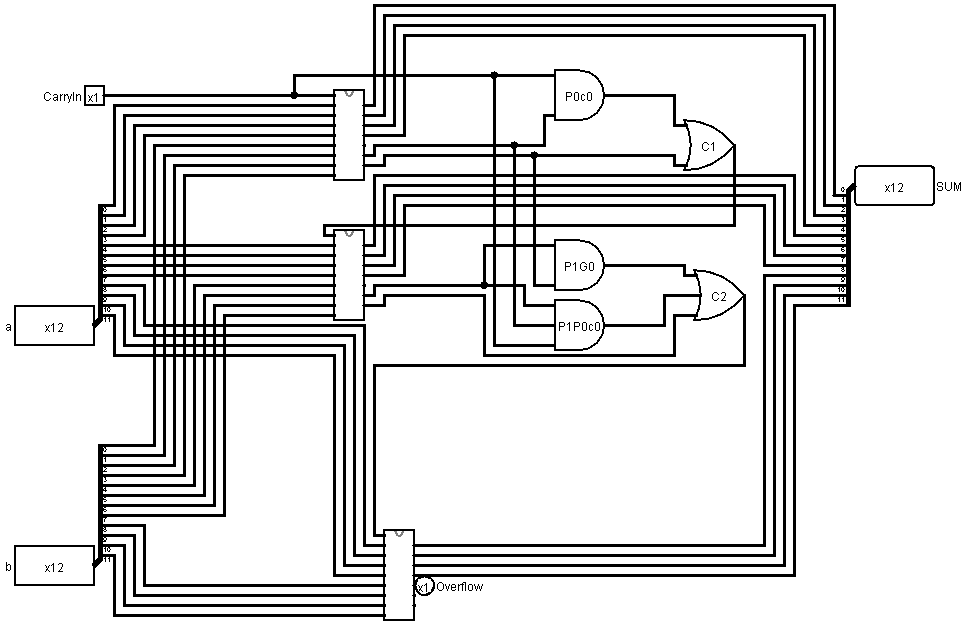
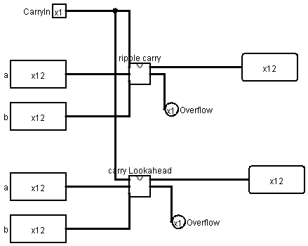

Titel: Adders
Dit verslag werd opgesteld door: Lorek Jeremi en Faisal Mohamed Ahmed
De oplossing bestaat uit de volgende bestanden (geef alle bestanden op):
Eerst maken we de waarheidstabel en halen daaruit de Booleaanse expressies

de Booleaanse expressies die hieruit volgen zijn:
sum = (A.!B.!CarryIn )+ (!A.B.!CarryIn )+ (!A.!B.CarryIn) + (A.B.CarryIn)
Als A.B.CarryIn waar is, moeten alle andere drie termen ook waar zijn. We kunnen de vergelijking dus vereenvoudigen tot:
CarryOut = (B .CarryIn) + (A.CarryIn) + (A.B)
Implementatie in Logisim:

Om een 12-bit two's complement ripple carry adder te maken, zullen we 12 full 1-bit adders aan elkaar moeten hangen. De eerste 1-bit Full Adder is de adder die de additie doet voor de LSB (least significant bit). In de CarryIn van de full adder gaat er een aparte CarryIn. Vervolgens verbinden we elke Full Adder zijn CarryOut met de CarryIn van de volgende Full Adder. In de eerste Full Adder gaat ook de a0 - bit en b0-bit van de 12-bit inputs A en B. In de tweede Full Adder komt dan a1 en b1, enz.
De sum output van elke Full Adder gaat respectievelijk naar zijn plek in 12-bit output sum.
De laatste Full Adder doet de additie voor de MSB (most significant bit), als er hierbij een CarryOut is met waarde 1, betekent dat, dat er Overflow is.
Implementatie in Logisim:

Voor deze oefening zullen we eerst een 4-bit adder moeten bouwen.
We hebben 9 inputs nodig (8 zoals in de opgave en 1 carryIn) en we gaan uiteindelijk 7 outputs hebben (6 uit de opgave en 1 voor overflow). We zullen ook gebruik maken van 4 Full Adders als bouwblokken.
Eerst maken we alle propagates en generates van ai en bi. Als we kijken naar de definities van propagate en generate, kunnen we volgende CarryIn's maken.
c1 = g0 + (p0 . c0)
c2 = g1 + (p1 . g0) + (p1 . p0 . c0)
c3 = g2 + (p2 . g1 ) + (p2 . p1 . g0) + (p2 . p1 . p0 . c0)
c4 = g3 + (p3 . g2) + (p3 . p2 . g1) + (p3 . p2 p1 . g0) + (p3 . p2 . p1 . p0 . c0)
Deze CarryIn's verbinden we dan met de CarryIn input van hun respectievelijke Full adder. De eerste Full Adder krijgt c0 als CarryIn input, de tweede c1, enzovoort. De andere twee inputs zijn zoals altijd een a bit en een b bit. De output verbinden we dan met hun respectievelijke s output (behalve de laatste). Bij de laatste Full Adder verbinden we zijn output, de CarryOut, met een xor-gate. Na deze xor-gate komt de Overflow. We gebruiken deze xor-gate omdat het anders foutieve overflow kan geven. (vb. 1100 + 1101 zou overflow geven zonder xor-gate, wat niet zo moet zijn) Daarom zetten we een xor-gate er nog bij, die verbonden is met c3.
Om onze 4-bit adder compleet te maken moeten we nog de outputs P0 en G0 juist verbinden. P0 is gewoon een AND van alle lagere level propagates. Dus we verbinden p0,p1,p2 en p3 met 1 AND gate en we krijgen dan onze super propagate P0.
De super generates kunnen gevonden worden met volgende formule: G0 = g3 + (p3.g2) + (p3.p2.g1) + (p3.p2.p1.g0). Dus hiervoor zal je 3 AND gates en 1 OR gate nodig hebben.
Implementatie in Logisim:

Voor de 12-bit 2's complement carry lookahead zullen we 3 van deze 4-bit adders moeten gebruiken. We verbinden de inputs a en b met hun respectievelijke inputs in de 4-bit adder en de output van de 4-bit adders met de output som. De carry-output van de 4-bit adder gaat naar de CarryIn input van de volgende 4-bit adder. De Carry-outputs worden als volgt berekent:
C1 = G0 + (P0 . c0)
C2 = G1 + (P1 . G0) + (P1 . P0 . c0)
De CarryIn van de eerste 4-bit adder is een gewone CarryIn.
Ten slotte verbinden we nog een output voor de overflow aan de laatste 4-bit adder.
Implementatie in Logisim:

Door volgend systeem te gebruiken kan je zien dat er telkens dezelfde resultaten komen waardoor je kan afleiden dat de carry lookahead klopt.
